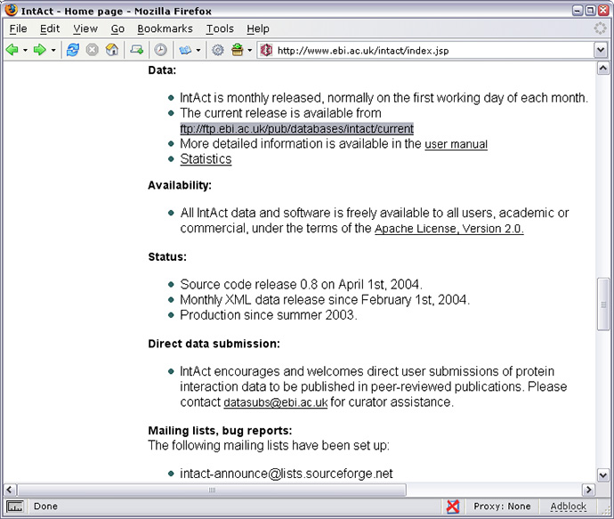
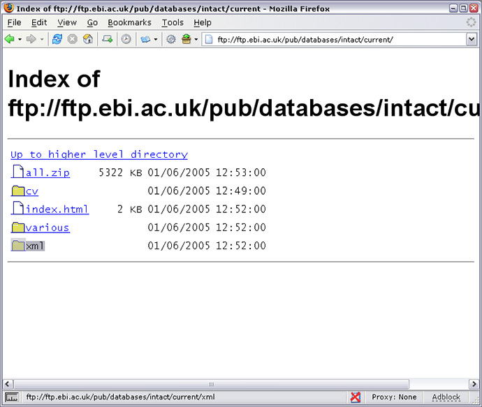
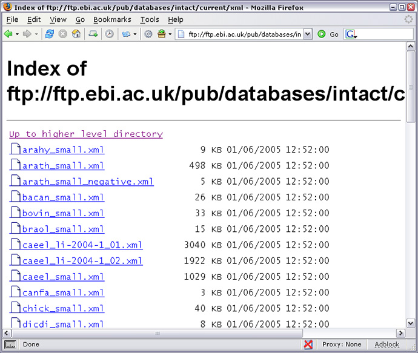
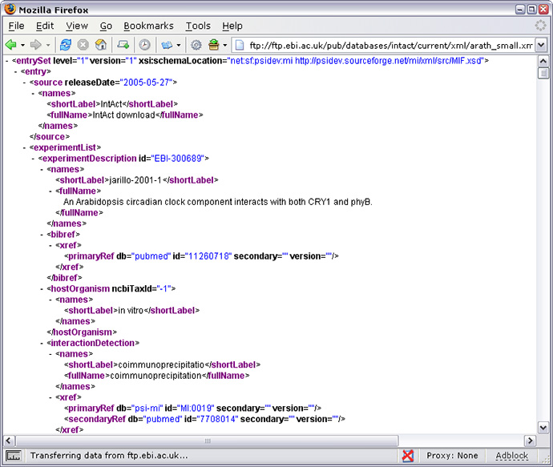
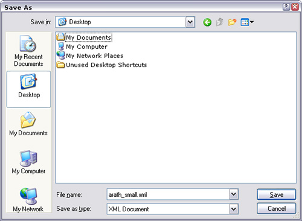

|
To analyse all the IntAct it is recommended that the data be download and analysed locally, with the help of a network visualisation
software, such as cytocape because analysing over the internet using HierachView can be relatively slow. If you wish to download IntAct
data for data-mining purposes or to amalgamate with private interaction data it may be worth while setting a local version of the IntAct
database. Details on how to do this can be found here.
Downloading the IntAct Data
All IntAct data can be downloaded free of charge. The data is available in a
XML
format called
PSI-MI. PSI-MI is a modern format
developed to enable the exchange of molecular interaction data using XML. For more information please
follow the links.
A link to the XML files that hold the IntAct can be found on the IntAct homepage
as shown below.



Each IntAct release is split into multiple XML files according to the pattern Species_name-[small|experiment-name].xml. This enables
researchers that want to compare organism specific data with IntAct data to download and analyse data from a specific species.
As from December 2005 all datasets are availiable in both PSI-MI version 1.0 and 2.5.
To download the PSI-MI XML files either right-click on one of the files and "Save link as" or left click to open the file
in the browser, as shown below.

To save the PSI-MI XML go File / Save Page as to get the window shown below. Ensure that the files is saved in the "XML Document"
format.

To view the IntAct data downloaded use a network visualization program. For information on such programs please click
here
|